Úvod do Části třetí
Gratulujeme k úspěšnému dokončení Části druhé kurzu! 🎉 🎉
Odvedli jste skvělou práci při procházení všech technik a pečlivém studiu teorie z Části druhé. Pojďme si udělat rychlé opakování toho, co jste se naučili:
- ✔️ Zvládli jste práci s různými konzistencemi barvy
- ✔️ Rozvinuli jste dovednosti v linkách a technice double dip
- ✔️ Objevili jste, jak používat filbert štětce a stali se mistry blendování
- ✔️ Víte, jak pracovat s houbičkami pro skvělé výsledky
- ✔️ Zvládli jste techniku one stroke a umíte malovat krásné one stroke růže
- ✔️ Víte, jak používat třpytky a šablony ve face paintingu
- ✔️ A objevili jste, jak si postavit perfektní face paintingový setup
Jste už hrdí na své úspěchy? Protože my rozhodně ano! Teď je čas využít dovednosti zvládnuté v Části druhé a přejít k nejzajímavější části kurzu — Části třetí, vytváření fantastických face paintingových designů!
Jste připraveni? Tak pojďme sebrat naše barvy a nástroje, začít s dobrou náladou a vyrazit dobývat nové kreativní vrcholy v Části třetí.
📋 Obsah
- Modul 1: Základy práce na obličeji — ohniskové body, symetrie
- Lekce 1: Umístění designu ve face paintingu
- Lekce 2: Umístění světel a stínů ve face paintingu
- Lekce 3: Ohniskové body ve face paintingu
- Lekce 4: Praktické využití ohniskových bodů
- Lekce 5: Tipy a triky pro symetrické designy
- Modul 2: Vše o motýlech — geometrie, typy a techniky malování
- Lekce 1: O motýlech
- Lekce 2: Jak vytvořit perfektní tvar motýla
- Lekce 3: TOP 10 chyb při malování motýlů
- Lekce 4: Základní motýl
- Lekce 5: One stroke motýl
- Modul 3: Světlo a stín ve face paintingu — tvorba realistických 3D objektů
- Lekce 1: Světlo a stín ve face paintingu
- Lekce 2: Tvorba 3D sférických prvků
- Modul 4: Povinné designy
- Lekce 1: Heart Princess (Srdcová princezna)
- Lekce 2: Klasická kočička
- Lekce 3: Klasický Spider-Man
- Lekce 4: Maska Batmana
- Lekce 5: Realistický tygr
- Lekce 6: Alicorn
- Lekce 7: T-Rex ve dvou variantách
- Lekce 8: Pirátská lebka
- Modul 5: Kroky k vytvoření vlastního designu
- Krok 1: Nápad
- Krok 2: Zdroje inspirace
- Krok 3: Určení umístění
- Krok 4: Skica na papíře
- Krok 5: „Hrubý" design na cvičné podložce a zkouška na obličeji
- Krok 6: Finální design
- Odkazy na inspirativní stránky a události
Modul 1 — Základy práce na obličeji. Ohniskové body. Symetrie v designech.
Umístění designu, ohniskové body, symetrie a jak zachránit nepovedený design
Lekce 1: Umístění designu ve face paintingu
Zkušený a talentovaný face painter to dělá tak, že to vypadá jednoduše — jako by design vznikl téměř bez námahy. Pravda je ale taková, že skvělý face painting je mnohem komplikovanější, než byste čekali. Skvělý face paintingový design se totiž silně opírá o vytvoření harmonie mezi mnoha prvky.
Už jsme probírali, jak výběr nástrojů (štětců a houbiček) a produktů (tedy face paintingového makeupu) může ovlivnit výsledek, stejně jako technika. Ale posledním a možná nejméně pochopeným prvkem dobrého face paintingového designu je umístění.
Promyšlené umístění může design dramaticky vylepšit, zatímco ignorování „pravidel" může způsobit, že design bude vypadat plochý nebo prostě ne úplně správně.
V tomto modulu se ponoříme do základních principů neboli pravidel, která vám pomohou pracovat se třemi rozměry lidského obličeje. Podíváme se na ohniskové body, symetrii a na to, jak zachránit designové faux pas.
Pravidla — a jak je zvládnout
Face painting je hraniční umění mezi malbou na plátno a makeupem. Mnoho lidí předpokládá, že talentovaný malíř na plátno zvládne face painting snadno, ale není to vždy pravda. Zřejmý rozdíl mezi plátnem a lidským obličejem je ten, že jedno je ploché a druhé ne. Face painting proto vyžaduje speciální umístění designu pro zvýraznění rysů obličeje.
Umělec musí respektovat určitá pravidla umístění a ohniskových bodů, jinak design nebude vyvážený. Nebude mít harmonii ani plynulost a výsledek může vypadat nevhodně.
Moje osobní přesvědčení je, že dobrý face painter umožní osobě za uměním prozářit; proměnit obličej modelu a vylepšit ho osobností. Pokrytí celého obličeje plochou malbou tento efekt nevytvoří a podle mého názoru bude vypadat nudně.
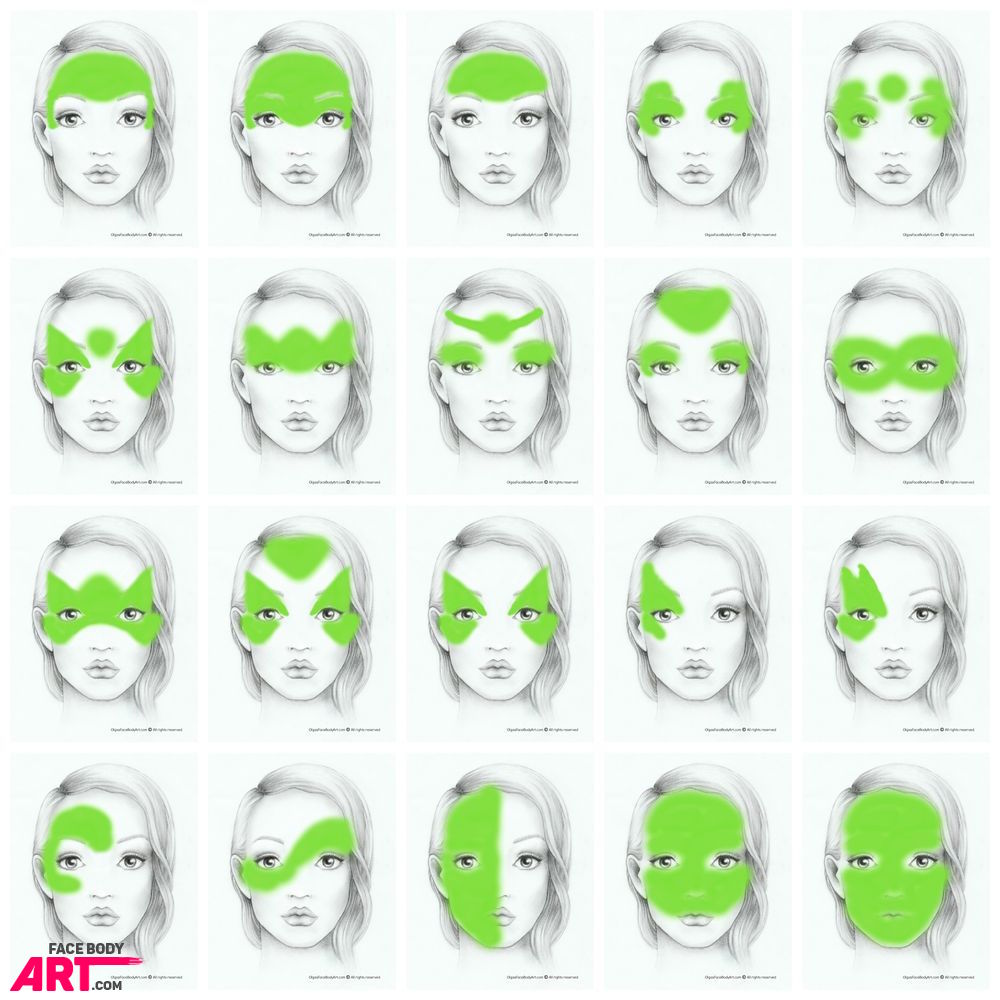
Hlavní umístění designů pro face painting
Linie nosní dírka — koutek oka
Jedna důležitá poznámka se týká použití linie nosní dírka — koutek oka. Pokud jste někdy praktikovali profesionální makeup, možná víte, že tato linie se často používá pro nanášení stínů a očních linek. Proto jsem navrhla novou sérii obličejových šablon s oční linkou.
Linie nosní dírka — koutek oka se ve face paintingu často používá pro vytváření ženských očí, pro designy jako motýli, květinové designy, masky, kočičky, víly a všechny druhy designů umístěných kolem oblasti očí.
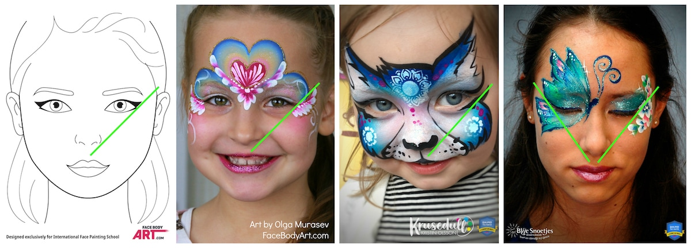
Linie nosní dírka — koutek oka v praxi: heart princess, kitty cat a květinový motýl
Lekce 2: Umístění světel a stínů ve face paintingu
Hlavní pravidla ve face paintingu
Lidský obličej má specifickou anatomickou strukturu a je velmi důležité ji zohlednit při face paintingu, zejména když chcete změnit rysy obličeje. Na obličeji lze identifikovat tři hlavní vyvýšeniny:
- Oblast nad obočím (anatomický termín — supraciliární oblast)
- Oblast lícní kosti (anatomický termín — zygomatická oblast)
- Oblast čelisti (anatomický termín — mandibulární oblast)
Všechny tyto vyvýšeniny jsou kostní struktury obličeje a pokud se podíváte pozorně, všimnete si, že jsou všechny nasměrovány pod úhlem 45 stupňů ve vztahu ke středu obličeje.
Toto pravidlo je velmi důležité si zapamatovat, protože zvýraznění těchto oblastí a přidání stínů nad a pod nimi vám pomůže pochopit, jak malovat ty nejlepší zombie, monstra, lebky nebo dokonce vytvořit efekt stáří, stejně jako budovat maskulinní, brutální face painty.
Podívejme se blíže na tento design lebky. Všimněte si, že nejzvýrazněnější místa jsou tři hlavní oblasti popsané výše. Stín je umístěn pod každou z nich.
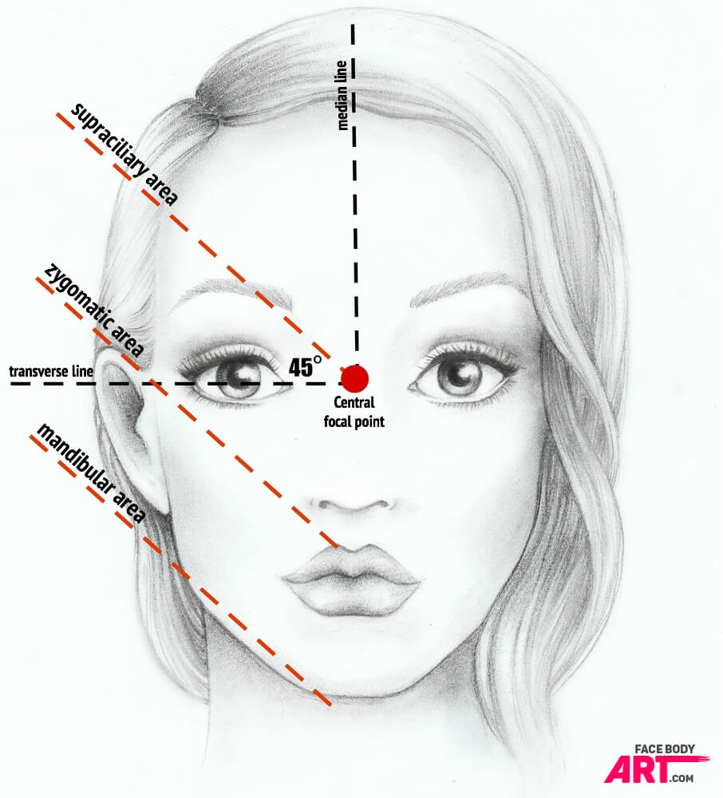
Tři hlavní vyvýšeniny obličeje pod úhlem 45°
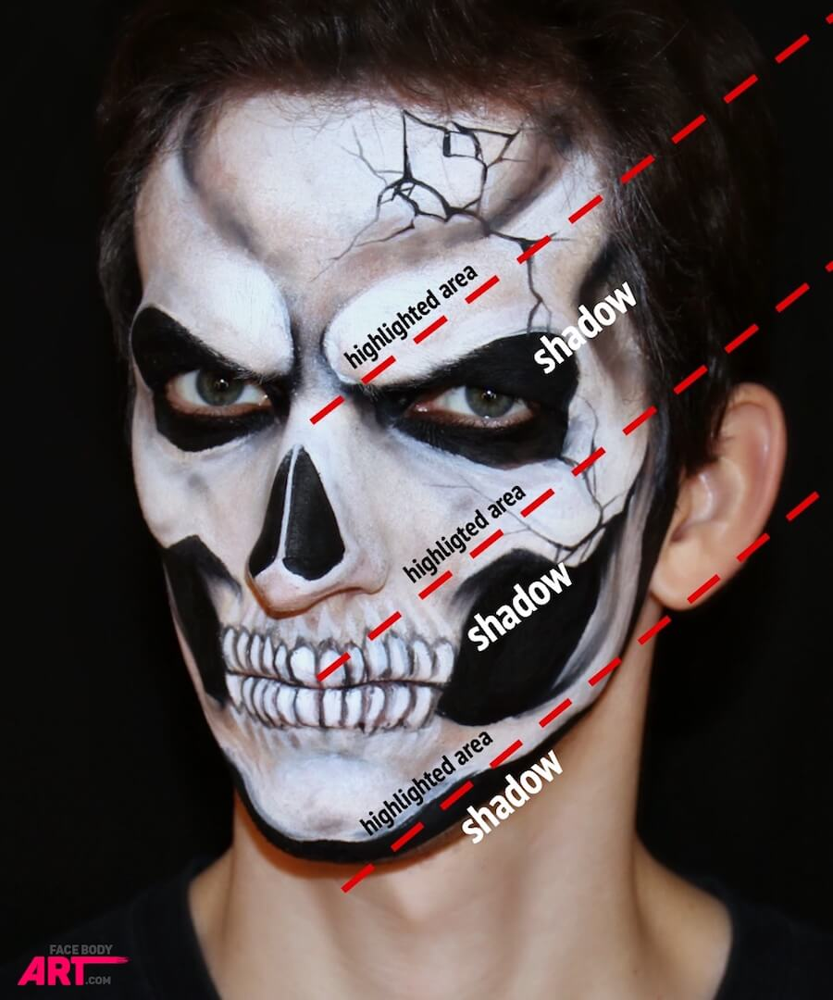
Umístění světel a stínů na příkladu designu lebky
Lekce 3: Ohniskové body ve face paintingu
Co myslíme ohniskovým bodem?
Ohniskový bod (OB) je v podstatě „značka" na obličeji. Ohniskové body jsou místa, kam naše oči podvědomě směřují, aby rozpoznaly známé rysy. Pomáhají nám nejen identifikovat a mapovat obličej jiného člověka, ale zahrnují také matematiku symetrie, asymetrie a geometrie.
Může to znít komplikovaně, ale pro face paintera je podstata tato: ohniskové body nám pomáhají najít rovnováhu a harmonii v našich designech. Jsou to kotevní body společné všem obličejům a pochopení toho, kde se nacházejí, může dramaticky zlepšit naši práci.
Liché ohniskové body:
- 1. Centrální OB — umístěný na úrovni očí přesně ve středu obličeje.
- 2. Centrální čelní OB — umístěný ve středu čela.
- 3. Horní OB — umístěný ve středu horní části hlavy, lze ho najít pohledem přímo na obličej a vedením tečné linie přes vrchol hlavy. Bod, kde se linie dotkne hlavy, bude Horní OB.
- 4. Bradový OB — umístěný ve středu brady.
- 5. Variabilní (migrační) OB — umístěný ve středu kompozice, který může být vytvořen na jakémkoli místě. Například Variabilní OB může být umístěn na tváři, na čele, nad obočím atd.
Párové ohniskové body:
- 6. OB vnitřních koutků očí.
- 7. Mezilehlé OB — umístěné mezi OB vnitřních koutků očí a centrálním OB.
- 8. OB vnějších koutků očí.
- 9. OB ve středu spánkové oblasti — umístěné ve středech spánkových oblastí, na úrovni linie očí.
- 10. OB lícních kostí — umístěné v nejvýraznějších částech lícních kostí.
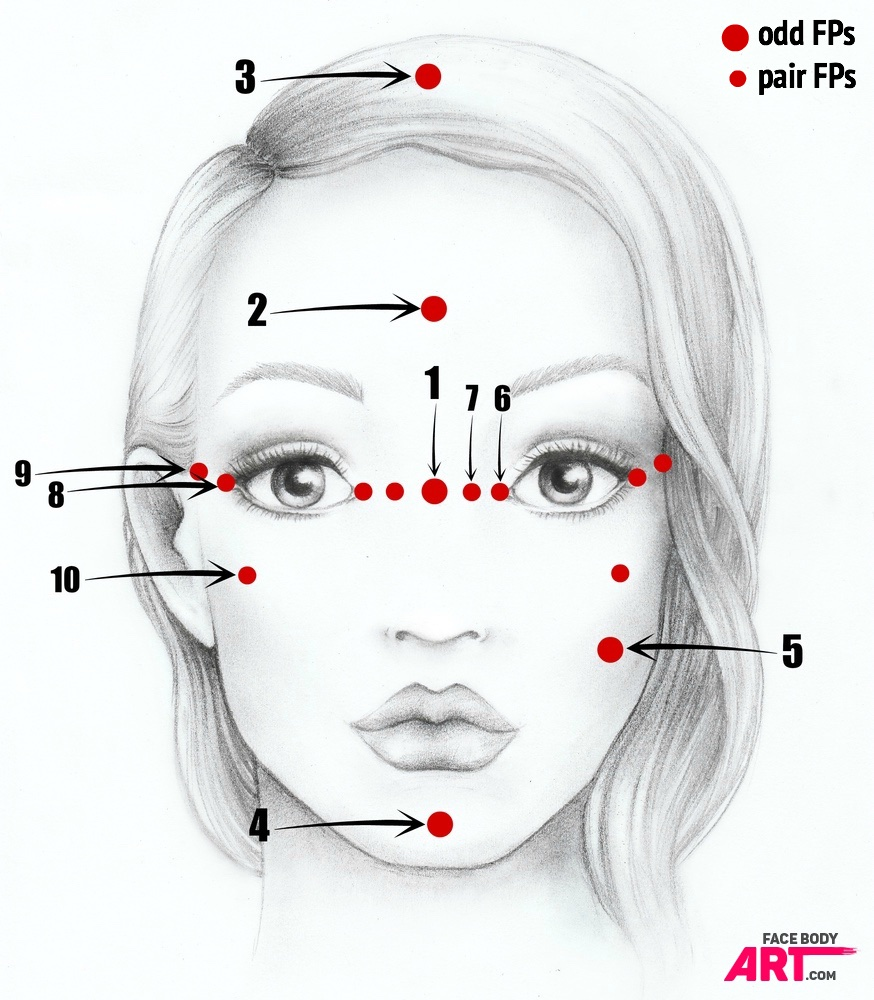
Přehled ohniskových bodů na obličeji
Jak funguje teorie „ohniskových bodů"?
Každý dobrý design bude obsahovat strukturu a směr neboli tok. Zatímco struktura je určena hlavně tím, co malujete a kam design umístíte, směr znamená propojení designu s ohniskovým bodem na obličeji.
A teď budou následovat poněkud suché a nudné vysvětlivky. Ano, vím, tohle rozhodně není typ materiálu, který byste rádi studovali, a může být trochu obtížné na pochopení. Nenechte se ale odradit, pokud to nepochopíte napoprvé. Pravidla popsaná v tomto modulu budeme prakticky aplikovat v celé Části III kurzu. Na konci vzdělávání se stanete mistry ohniskových bodů a budete schopni analyzovat jakékoli dílo pomocí získaných dovedností.
A takto ohniskové body „fungují":
- Čelo je největší vystupující oblast obličeje. Pokud se pozorně podíváte na směry k ohniskovým bodům, všimnete si, že Linie č. 1 a Linie č. 3 vytvářejí ovál. Takto by mělo být čelo orámováno ve face paintingu.
- Pro designy, které rámují čelo jako korunu, si všimněte směru Linie č. 2. Mírné zakřivení této linie vytvoří přirozenější vzhled.
- Linie č. 3 by měla směřovat pod úhlem 45 stupňů ve vztahu ke střední linii obličeje. Toto pravidlo platí pro stavbu motýlů, víl, křídel nebo dokonce správné umístění tygřích pruhů či kočičích uší.
- Jakýkoli design umístěný na čele nebo na tvářích by měl směřovat k Centrálnímu OB, Mezilehlému OB nebo OB ve vnitřním koutku oka.
- Design umístěný na spánku by měl nahoře směřovat k Centrálnímu OB, Mezilehlému OB nebo OB ve vnitřním koutku oka, rámujíc oko v zakřivené trajektorii. Směr dole by měl být k Bradovému OB nebo OB lícní kosti.
- Pokud budete malovat design ze slziček na spánkové oblasti, udělejte je mírně zakřivené a nasměrované k OB ve vnějším koutku oka, jak ukazuje Linie č. 6. Tento směr linie je stejný jako v makeupu, zejména při nanášení oční linky.
- Pro propojení designu z oblasti pod očima a středu obličeje použijte OB lícní kosti a Linii č. 7, která bude směřovat k jakémukoli z ohniskových bodů: centrálnímu OB, mezilehlému OB nebo OB ve vnitřním koutku oka.
- Pro motýly, masky a další designy, které mohou zahrnovat malování prodloužení z OB lícní kosti dolů, nasměrujte je k Bradovému OB podle Linie č. 8.
- Jakékoli cheek-art by mělo mít směr k Bradovému OB podle Linie č. 9 nebo nahoru, rámujíc obočí a sledujíc Linii č. 5.
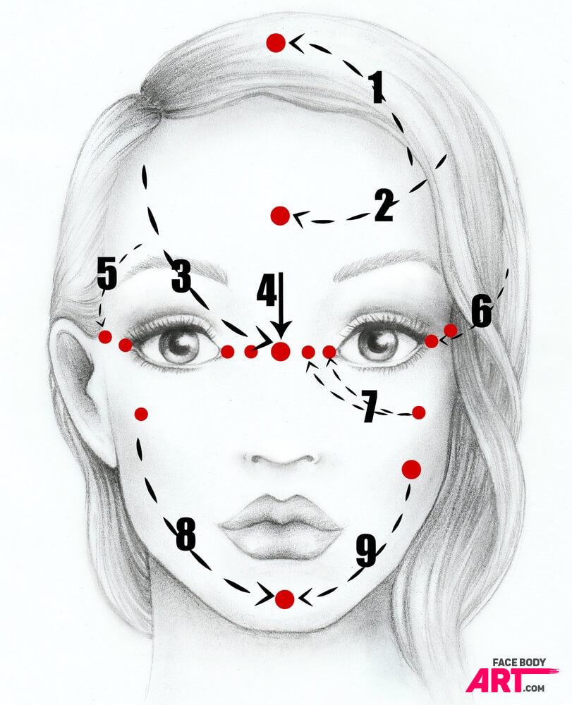
Směry k ohniskovým bodům na obličeji
Lekce 4: Praktické využití ohniskových bodů
Směry k OB v designu tygra:
- Všechny tygří linie směřují k centrálnímu ohniskovému bodu (centrální OB a OB ve vnitřních koutcích očí)
- Tygří linie umístěná pod úhlem 45 stupňů nad okem je mírně zakřivená s pokračováním směřujícím k hornímu OB
- Linie na spodní části obličeje směřují k bradovému OB
- Obrys očí respektuje směr linie, která prochází dolní linií řas
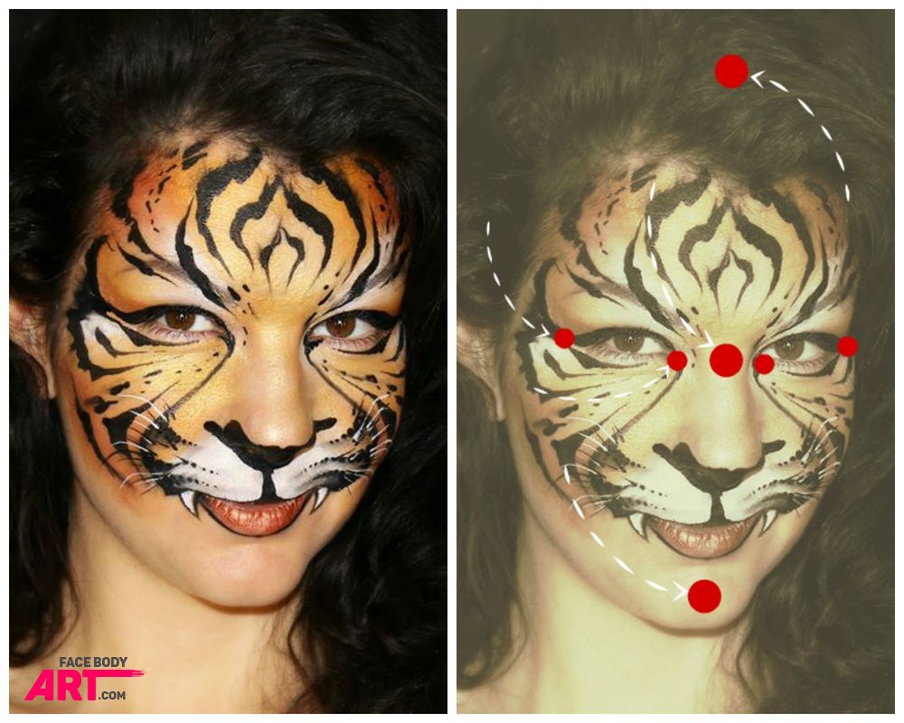
Směry k ohniskovým bodům v designu tygra
Směry k OB v cheek-artu kolibříka:
- Střed těla kolibříka představuje migrační OB
- Směr křídla kopíruje trajektorii linie zygomatické oblasti
- Směr celého designu míří nahoře k centrálnímu OB a dole k bradovému OB
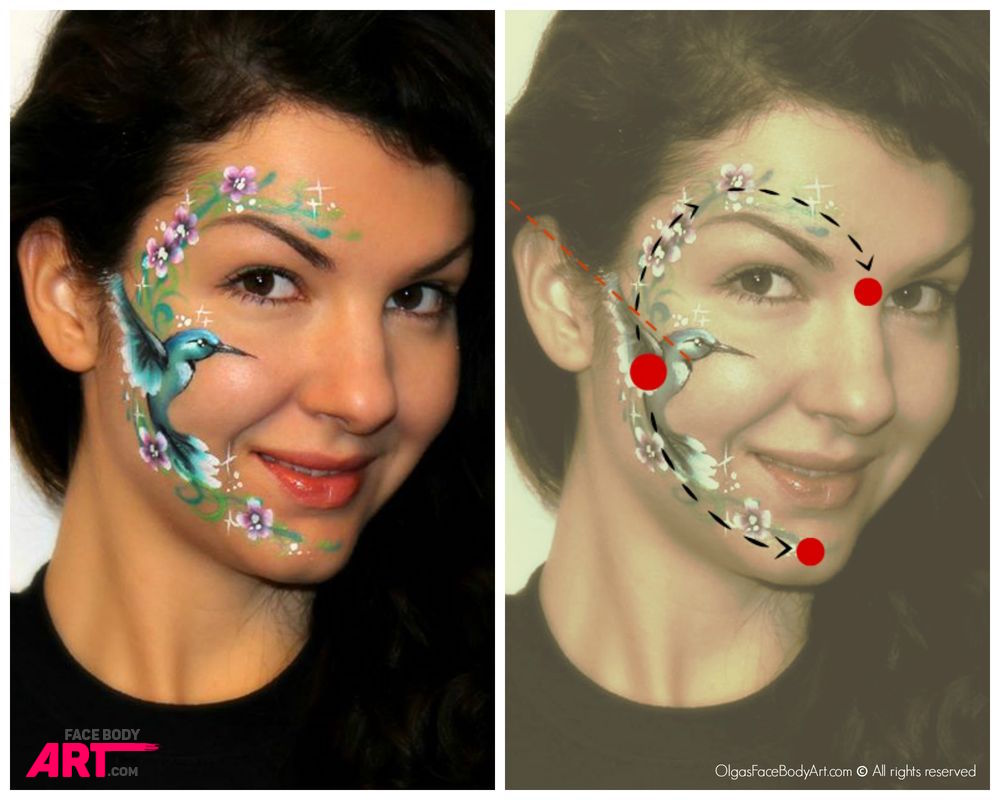
Směry k ohniskovým bodům v cheek-artu kolibříka
Směry k OB v designu masky:
- Střed růže je migrační OB, zatímco růže samotná představuje střed kompozice
- Listy nastavují směr dolů k centrálnímu OB a do stran
- Slzičky a spirálky na spánkové oblasti směřují k OB ve vnějších koutcích očí
- Série teček na spodní části masky nastavuje směr k OB ve vnitřních koutcích očí
- Podívejte se pozorně a zamyslete se, co se stane, když prodloužíme linii vycházející ze spodní spirálky? Přesně tak — bude směřovat k bradovému OB
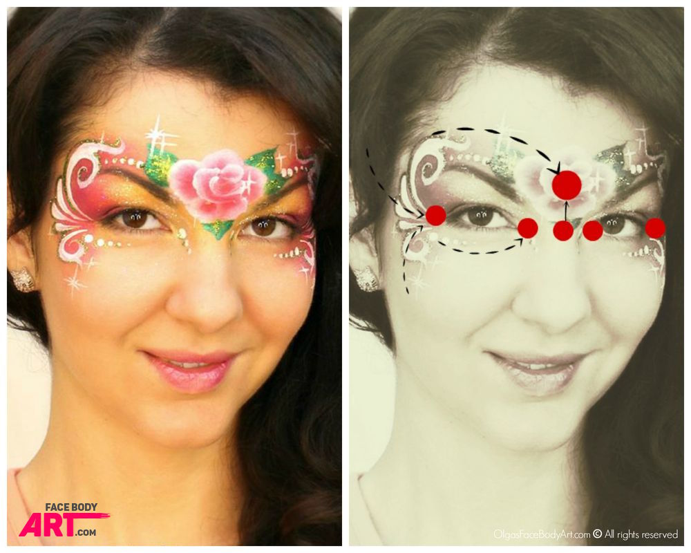
Směry k ohniskovým bodům v designu masky s růží
Směry k OB v designu Spider-Mana:
- Osa pavučiny na čele je mírně zakřivená a směřuje k hornímu OB, zatímco na spodní části obličeje míří k bradovému OB
- Obrys očí je propojen uprostřed obličeje v centrálním OB
- Obrys v horní části očí je umístěn pod úhlem 45 stupňů
- Spodní koutky obrysu očí jsou umístěny v OB lícních kostí
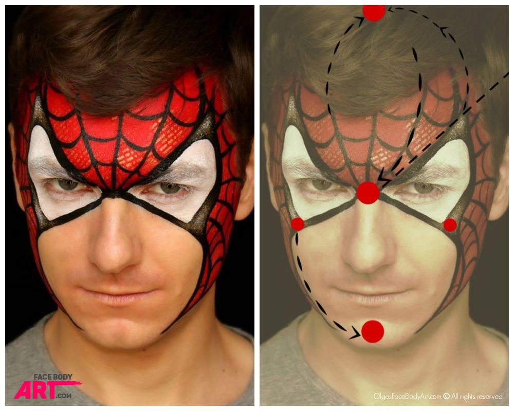
Směry k ohniskovým bodům v designu Spider-Mana
Lekce 5: Tipy a triky pro symetrické designy
Symetrie může být výzvou pro mnoho face painterů. Není snadné ji dosáhnout a často je frustrující podívat se zpětně na fotku svého designu a vidět, kde nedostatek symetrie design podřadil.
Abych vám pomohla toto překonat, nastínila jsem několik praktických tipů, které vám pomohou rozvinout větší kontrolu nad symetrií a tím snad zlepšit vaše face paintingové designy.
Procvičujte základní prvky ve všech směrech
Při procvičování linek nezapomeňte malovat linky ve všech čtyřech směrech: zleva doprava, zprava doleva, shora dolů a zdola nahoru. Také se snažte dělat linky co nejdelší. To vytrénuje vaši ruku a pomůže vám získat stabilitu a jistotu malování v jakémkoli směru stejně krásně.
Najděte si pohodlnou pozici pro malování
Pocit pohodlí při malování je nezbytný pro dosažení nejlepších výsledků. Najděte pozici, která vám umožní dívat se přímo na osobu, nebude bolet záda, krk ani kolena. O tom jsme mluvili v Části druhé, Modulu 9 „Pohodlné pozice těla".
Osobně preferuji střídání pozic při face paintingu. Moji klienti sedí na vysoké židli, zatímco já maluji vestoje, pokud je můj klient vysoké dítě nebo dospělý, nebo maluji vsedě na normální židli, pokud je můj klient malé dítě. Toto střídání mi pomáhá relaxovat a poskytnout nezbytný odpočinek zádům a nohám. Takto dokážu malovat 7-8 hodin v kuse a stále se cítit dobře. Pamatujte také, že pohodlná ortopedická obuv je také důležitá.

Pohodlná pozice při malování malého dítěte
Pracujte střídavě „levo-pravo"
Malování celé poloviny obličeje a pak snažení se vytvořit symetrickou kopii na druhé straně by jen přidalo na obtížnosti. Místo toho pracujte v menších sekcích, malujte jeden detail najednou a často přepínejte z jedné strany na druhou.
Pokud jste praváci, budete se cítit pohodlněji při malování detailu na pravé straně klienta a pak jeho kopírování na levou stranu. Pokud jste leváci, udělejte opak — malujte detail na levé straně a kopírujte na pravou.
Udělejte si skicu a stanovte ohniskové body a vodicí linie
Pokud je design velmi náročný na symetrii, nebo se necítíte jistí, že to zvládnete, použijte hnědou nebo bílou makeupovou tužku, nebo štětec nabraný barvou v tónu pleti, k nastavení ohniskových bodů a vodicích linií na obličeji, které vám pomohou umístit všechny detaily na správná místa.
Je jednodušší malovat dlouhou linii složenou z menších sekcí propojených mezi sebou, než malovat celou linii najednou.

Propojování bodů pro vytvoření symetrického designu
Odstupte a podívejte se na design z dálky
Když pracujete na designu zblízka, vidíte jeho detaily, ale může vám unikat „celkový obraz". Udělejte pár kroků zpět a všimněte si symetrie a vyváženosti svého designu. Potřebuje doladění?
Vyfoťte si to
Fotka vám pravděpodobně ukáže chyby, které v reálném životě můžete přehlédnout. Vyfoťte si design, když je ještě rozpracovaný, a znovu předtím, než ho dokončíte, abyste viděli, zda nejsou nějaké chyby k opravení.
Toto je možná něco, co dělejte při tréninku, spíše než při práci. Poslední věc, kterou chce dítě vědět, je, že nejste spokojeni se svou prací. Pro dítě na vaší židli nikdy nedělejte povyk kvůli chybám — vždy se usmívejte a tvařte se, jako by to byl nejlepší design, jaký jste kdy udělali — i když není.
Odveďte pozornost od chyb
Někdy (často když jste začátečníci) váš design nemusí být symetrický a nevidíte způsob, jak to opravit. Řešením je odvést pozornost od chyby přidáním asymetrického prvku ve středu obličeje.
Tento trik obvykle funguje pro motýly, kdy asymetrické tělo s tykadly může odvést pozornost od pokažených tvarů křídel. Dalším tipem je přidání highlights, jako jsou shluky teček a jisker, linky, slzičky atd. Kontrast mezi tmavým obrysem a highlights pomůže zamaskovat vaše chyby.
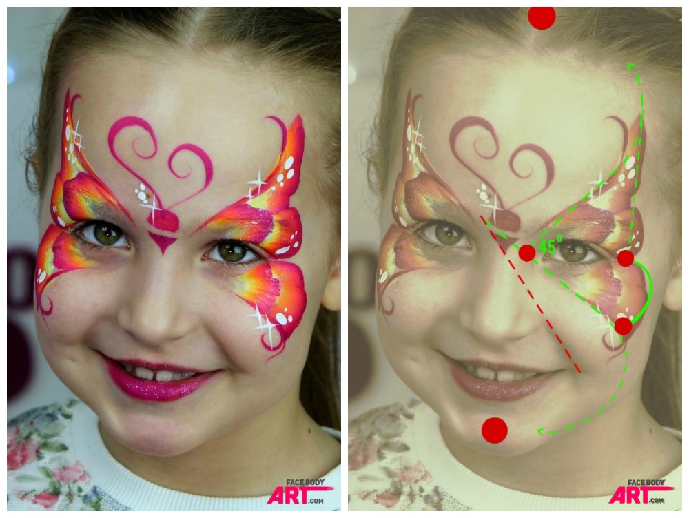
Motýl technikou one stroke — příklad symetrického designu
Modul 2 — Vše o motýlech. Geometrie, typy motýlů a techniky malování.
Geometrie skutečného motýla, stavba tvaru, nejčastější chyby a konkrétní designy
Lekce 1: O motýlech
Motýlí maska je jedním z nejžádanějších face paintingových designů, zejména pro dívky. A samozřejmě existuje bezpočet adaptací, které všechny sdílejí stejnou geometrickou formu. Jakmile pochopíte pravidla malování harmonického tvaru motýla, budete moci s jistotou vytvářet mnoho dalších variací.
Nejprve si prostudujme geometrii skutečného motýla. Když jsem začala praktikovat face painting, analyzovala jsem stovky různých motýlích face paintingů i obrázků skutečných motýlů. Dlouho mě trápila otázka, proč některé motýly vypadaly vyváženě a harmonicky, i když byly jednoduché, zatímco jiné (navzdory tomu, že byly krásné a složité) byly nepříjemné na pohled.
Tehdy jsem si uvědomila, že bych měla brát originální přírodní motýly jako měřítko krásy a harmonie motýlů. A to byla odpověď — tajemství harmonického motýlího face paintingu je v jeho geometrii.
Důležité aspekty geometrie motýla:
- Horní křídla jsou umístěna pod úhlem 45 stupňů vůči tělu motýla. Tento úhel je tvořen dvěma osami, které protínají motýla — vertikální osa prochází tělem a horizontální je umístěna na spodním obrysu horního křídla.
- Horní i spodní křídla se spojují v jednom bodě, což je spoj mezi hlavou a tělem motýla. Všechny žilky křídel také směřují k tomuto ohniskovému bodu.
- Horní křídlo má trojúhelníkový tvar.
- Spodní křídlo má tvar okvětního lístku.
- Horní a spodní křídla jsou oddělená a je mezi nimi mezera.
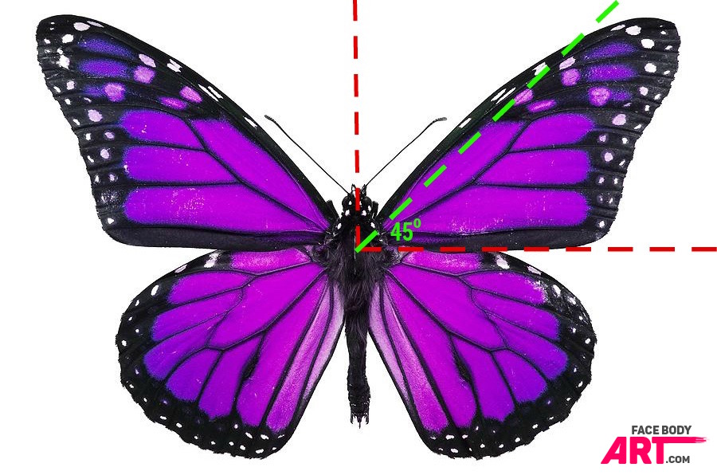
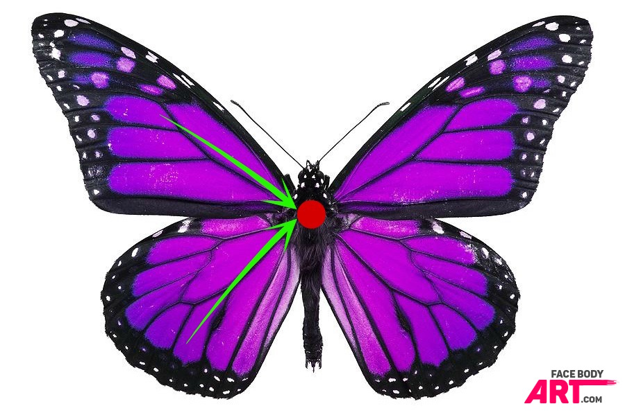
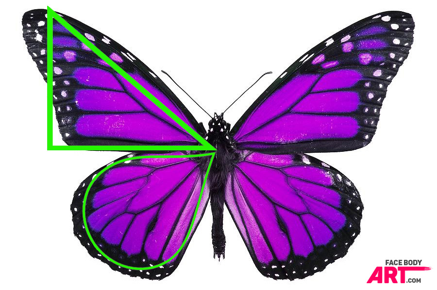
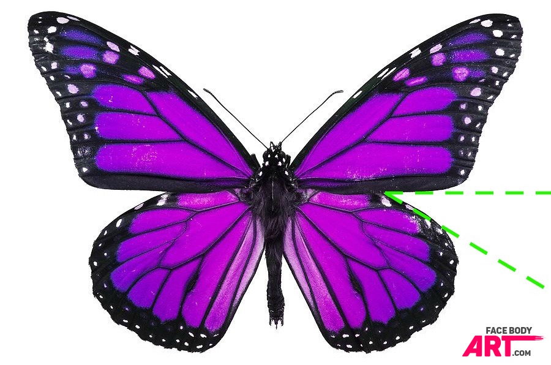
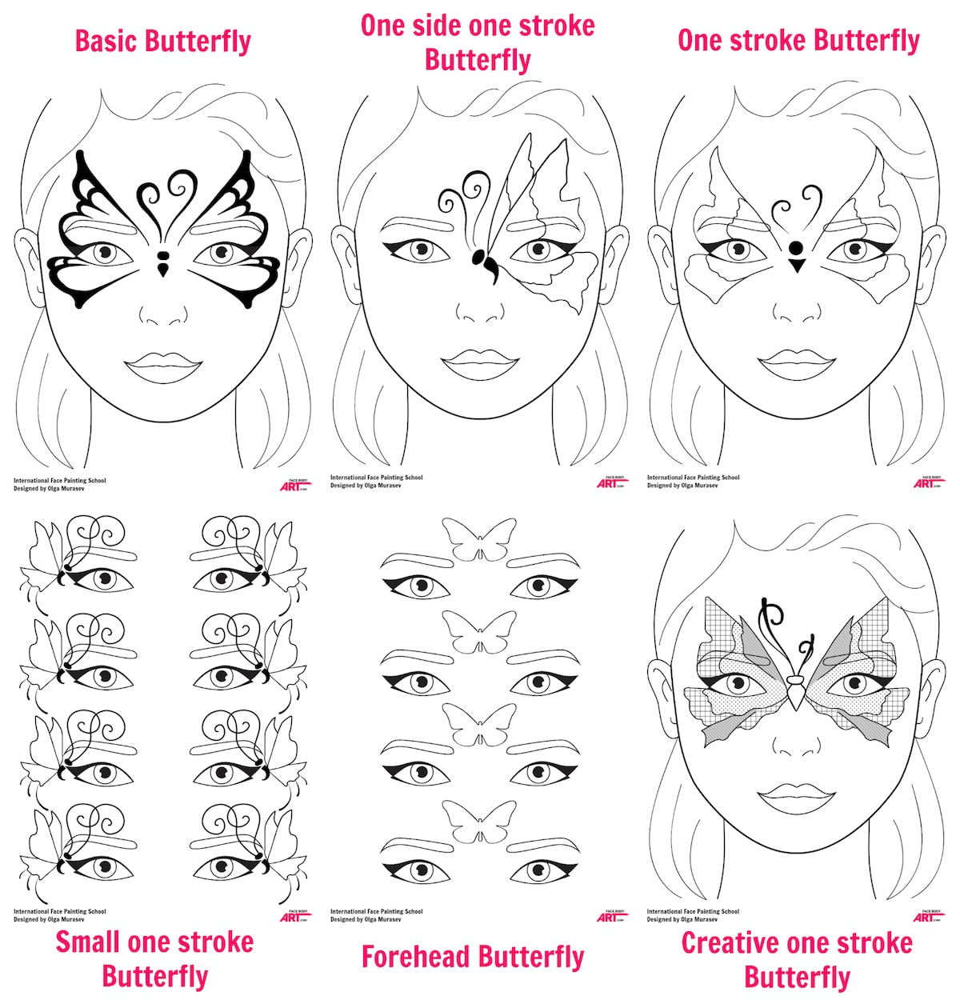
Šablony motýlů ke stažení a procvičování
Podrobnější pokyny k práci s každým typem šablony najdete v každé sekci s odpovídajícím typem motýla, který budeme v kurzu studovat.
Lekce 2: Jak vytvořit perfektní tvar motýla
Po pozorném studiu skutečných motýlů se nyní podíváme, jak přenést tyto pozorování geometrie a formy na obličej a vytvořit harmoničtější motýlí masku.
Pravidla stavby motýla krok za krokem:
1. Než začnete malovat, vyberte si centrální ohniskový bod, kde se budou křídla sbíhat. Může to být kterýkoli z těchto: centrální OB, mezilehlý OB, nebo OB vnitřního koutku oka.
2. Vnější linie, která rámuje horní křídlo, by měla směřovat přísně vertikálně dolů a končit v ohniskovém bodu vnějšího koutku oka.
3. Podle geometrie skutečného motýla by horní křídlo mělo směřovat pod úhlem 45 stupňů ve vztahu ke středu obličeje. Vnitřní obrys horního křídla může být rovný nebo mírně zakřivený. Pokud se rozhodnete ho zakřivit, ujistěte se, že směřuje k hornímu ohniskovému bodu.
4. Stejně jako u skutečného motýla by horní křídlo mělo mít trojúhelníkový tvar a spodní křídlo tvar okvětního lístku.
5. Horní a spodní křídla by měla být oddělená a spojovat se v ohniskovém bodu vnějšího koutku oka. Na lícní kosti je více prostoru než na spánku, proto doporučuji spodní křídlo mírně vysunout ven. To vám pomůže zachovat mezeru mezi křídly a přizpůsobit tvar motýla lidskému obličeji.
6. Nejvzdálenější bod spodního křídla by měl být umístěn na OB lícní kosti. To je nejobtížnější ohniskový bod k nalezení, proto doporučuji začít stavět spodní křídlo od tohoto bodu. Pokud chcete přidat prodloužení ke spodním křídlům, ujistěte se, že směřují k bradovému OB.
7. Lidský obličej má obvykle více prostoru v oblasti lícní kosti a méně na spánku. To naznačuje, že bychom měli malovat spodní křídlo širší než horní. Příjemnějšího efektu se však dosáhne, když je spodní křídlo kratší než horní.
8. Ještě jeden důležitý tip — umístění spodního křídla. To je obzvláště důležité při malování motýlů na dospělé, protože špatně umístěné spodní křídlo může osobu zestařit (a vaše zákaznice bude mnohem šťastnější, když bude vypadat mladší). Věnujte pozornost vnitřnímu obrysu spodního křídla — linie spojující OB lícní kosti a centrální OB by měla tvořit úhel s linií vedenou přes nazolabiální rýhu. Pokud budou tyto dvě linie rovnoběžné, osoba bude vypadat starší.
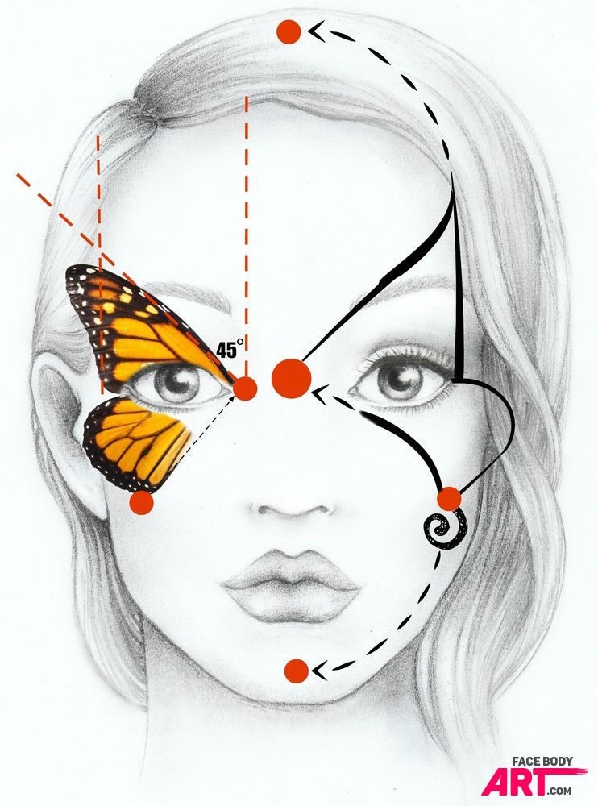
Schéma stavby perfektního tvaru motýla na obličeji
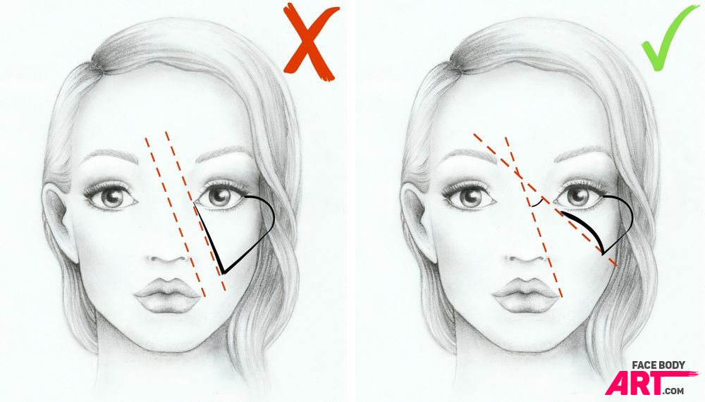
Správné umístění spodního křídla — vnitřní obrys vs. nazolabiální rýha
Doplňující vysvětlení:
- Proporce: estetičtěji vypadá, když horní křídlo bude větší než spodní.
- Struktura horního křídla: horní křídlo je složeno ze 3 trojúhelníkových sekcí. Horní a spodní jsou na stejné úrovni a stejné velikosti, zatímco mezilehlá sekce je menší a umístěna mírně hlouběji. Použijte špičku obočí jako bod, kde se mezilehlá a spodní sekce propojují.
- Okraj spodního křídla: spodní křídlo by nikdy nemělo přesahovat špičku nosu.
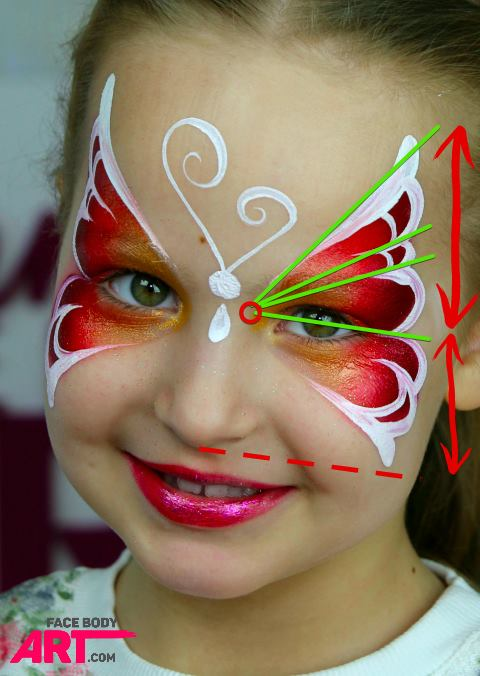
Doplňující vysvětlení — proporce a struktura křídel
Příklady od profesionálů:
🦋 Motýl od Nurit Pilchin: Použitý centrální OB. Horní křídlo trojúhelníkové, spodní ve tvaru lístku. Horní křídlo pod úhlem 45°. Nejvzdálenější bod spodního křídla v OB lícní kosti, prodloužení směřuje k bradovému OB. Spodní křídla mírně menší než horní — přidává to vyváženost. Vnitřní obrys spodního křídla a nazolabiální rýha svírají úhel.
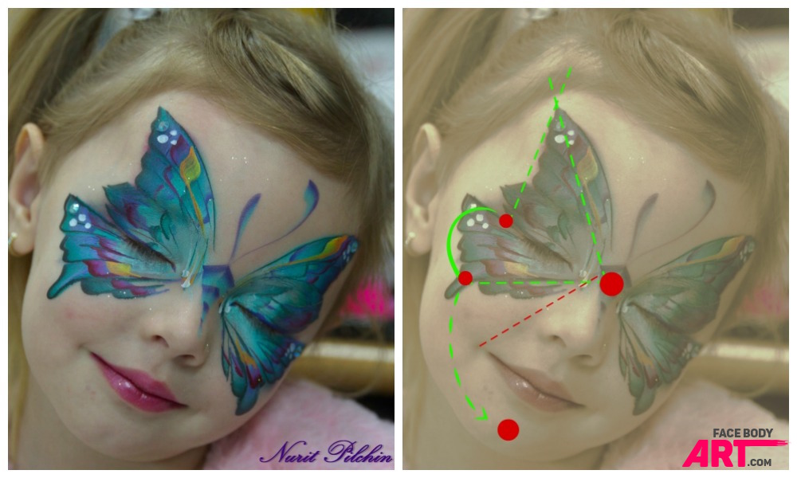
Motýl od Nurit Pilchin — analýza ohniskových bodů
🦋 Motýl od Becstar Anthony: Použitý OB vnitřního koutku oka. Horní křídlo trojúhelníkové a mírně zakřivené směrem k hornímu OB. Nejvzdálenější bod spodního křídla v OB lícní kosti s prodloužením k bradovému OB.
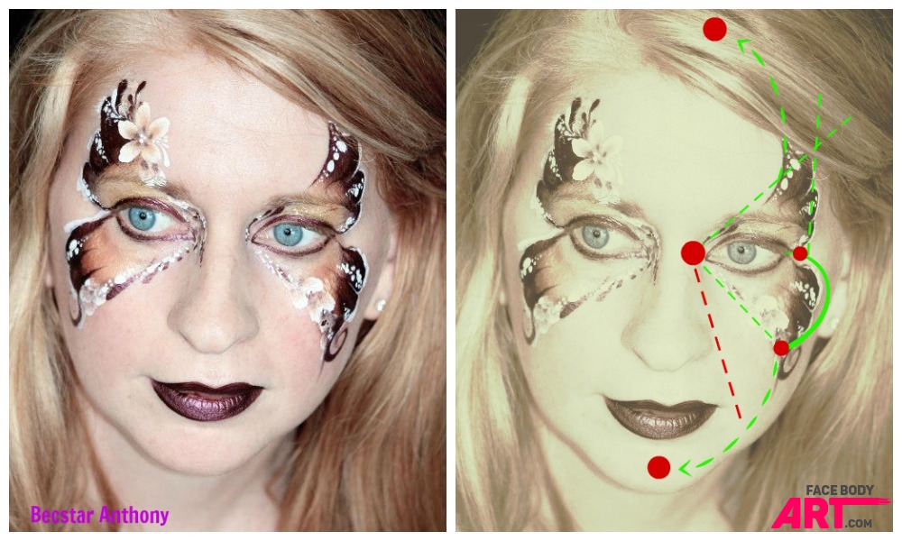
Motýl od Becstar Anthony — analýza ohniskových bodů
🦋 Motýlí maska od Ronnie Mena: Použitý centrální OB. Horní křídlo trojúhelníkové pod úhlem 45°. I přesto, že spodní křídlo je poněkud níže než OB lícní kosti, harmonie je zachována díky žilkám, které zdůrazňují tvar spodního křídla s malým zakřiveným prodloužením směřujícím k bradovému OB. Mezera mezi křídly je šikovně vytvořena žlutou sekcí mezi fialovými křídly.
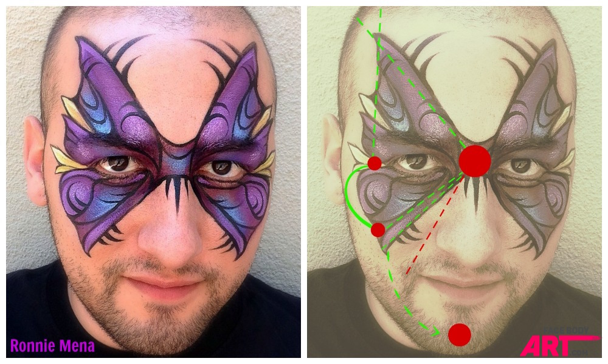
Motýlí maska od Ronnie Mena — analýza ohniskových bodů
Lekce 3: TOP 10 chyb při malování motýlů
Při malování motýlí masky existuje několik častých chyb. Pokud některé poznáváte, nenechte se odradit. Přesné vědění, co opravit, vám pomůže tyto chyby napravit a zlepšit vaši práci.
1. Křídla jsou příliš velká (horní i spodní)
Začátečník s novými barvami se snadno nechá unést touhou pokrýt celý obličej barvou. Nedělejte to — soustřeďte se na tvar a nechte část kůže odkrytou. Bude to mnohem lichotivější.
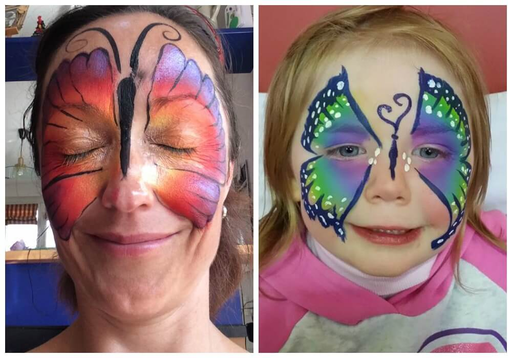
Oba motýli jsou příliš velcí — pokrývají téměř celý obličej a ztrácejí tvar
2. Křídla spojená širokým pruhem na nose
Pamatujte, že všechna křídla by se měla spojovat v jednom centrálním ohniskovém bodu. Spojení širokým pruhem (zvláště pokud jste namalovali velké tělo motýla) bude vypadat těžkopádně.
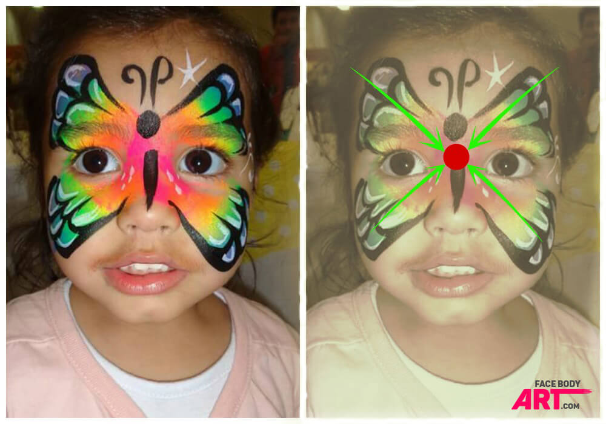
Horní a spodní křídla spojená v dlouhém úseku přes nos — centrální OB je ztracen
3. Pokrytí celého spánku barvou a spojení horního a spodního křídla
Spojení horního a spodního křídla na spánku je relativní chyba — motýl bude v tomto případě vypadat spíše jako maska.
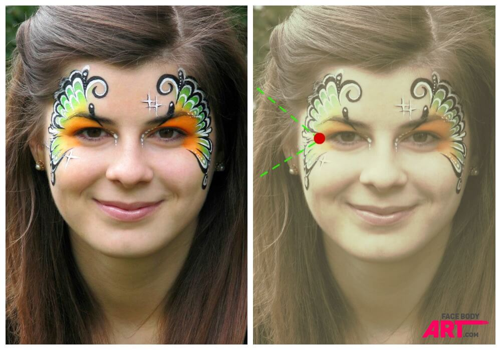
Horní a spodní křídla spojena — pokrývají celou spánkovou oblast
4. Horní křídla umístěná pod vertikálním úhlem
Toto je zřejmě druhá nejčastější chyba po příliš velkých křídlech. Pamatujte, že nejlichotivějšího efektu se dosáhne, když jsou křídla umístěna pod úhlem 45 stupňů. Pokud křídla uděláte příliš vertikální, nezbude místo pro obrys a malování těla motýla a ztratíte rovnováhu.
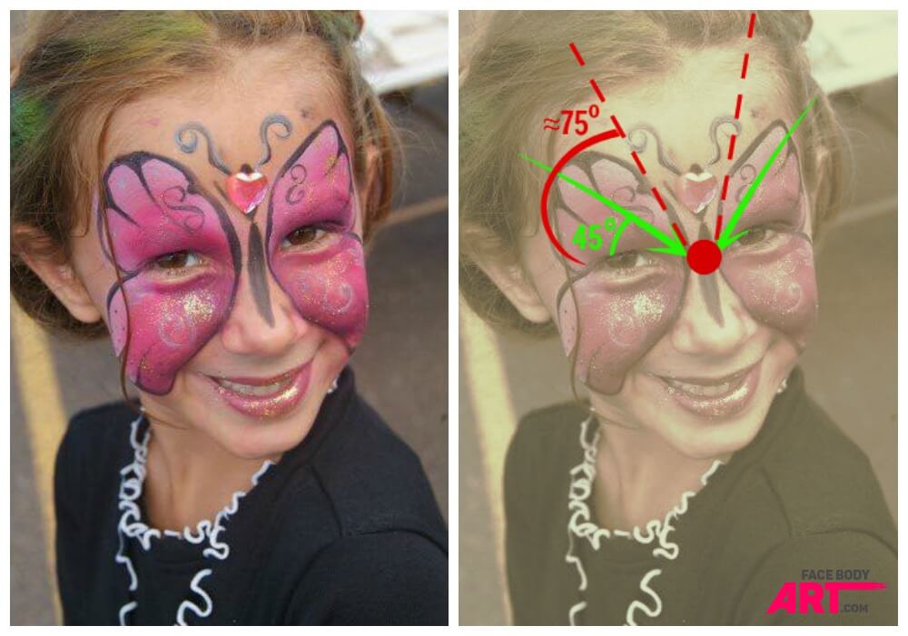
Horní křídla pod úhlem cca 75° — příliš vertikální. Zelená šipka ukazuje správný úhel 45°
5. Spodní křídla umístěná pod vertikálním úhlem
Pamatujte na pravidlo umístění spodních křídel. Pokud jsou spodní křídla pod ostrým úhlem a téměř rovnoběžná s nazolabiální rýhou, zestárnou osobu a zničí rovnováhu motýla. Vždy se ujistěte, že nazolabiální rýha a vnitřní okraj spodního křídla svírají tupý úhel.
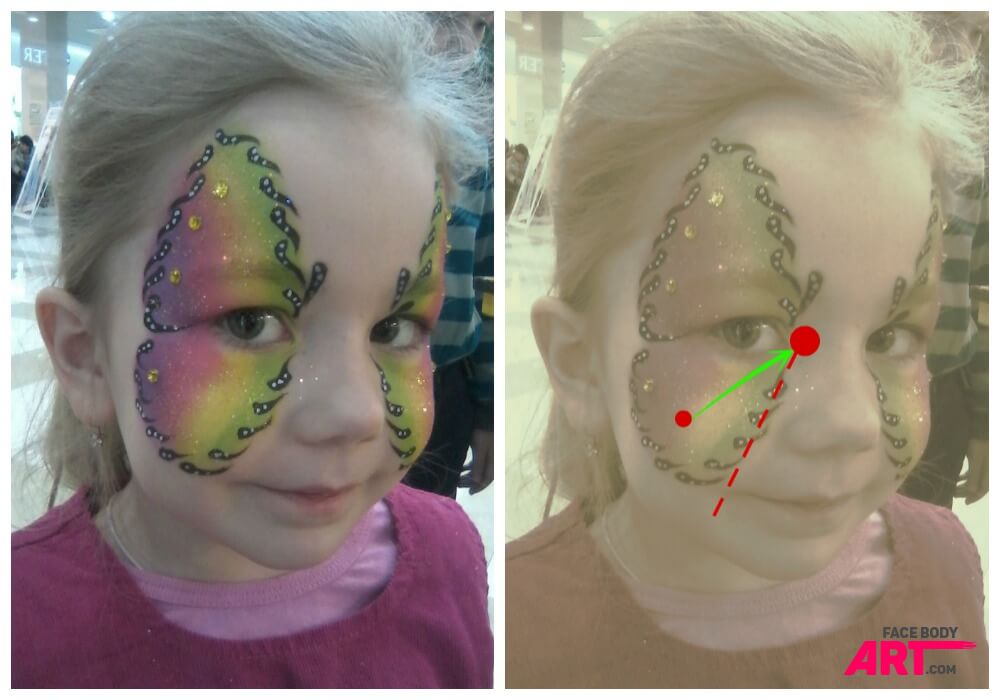
Spodní křídlo téměř v nazolabiální rýze — zelená šipka ukazuje správné umístění
Opakování pravidla umístění spodního křídla
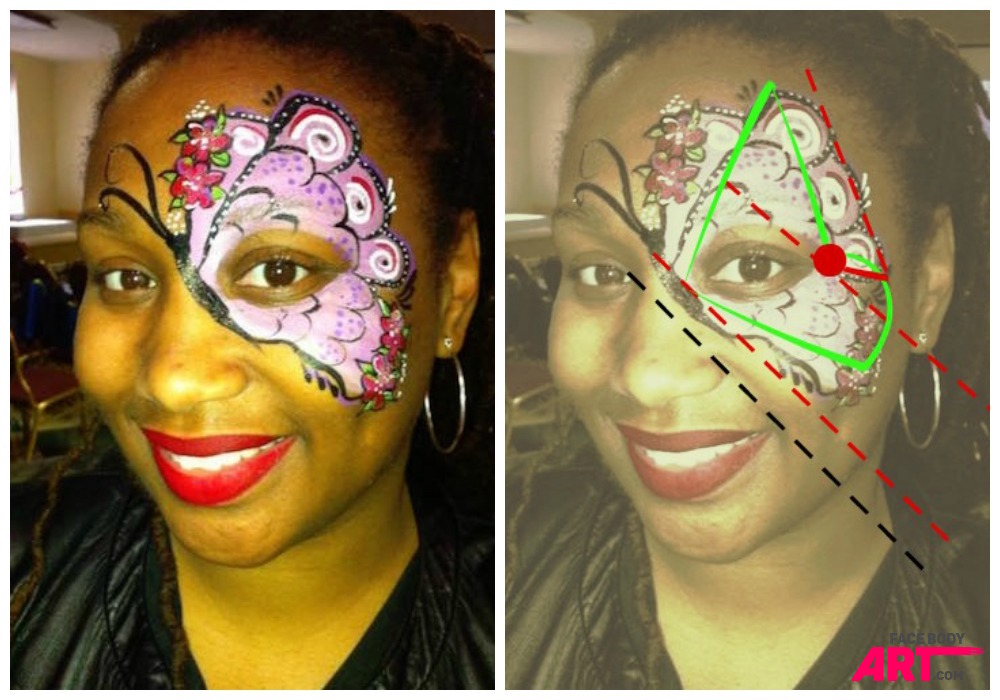
Vertikálně umístěné spodní křídlo s obdélníkovým tvarem — správný tvar vyznačen zeleně
6. Čtvercová horní křídla
Tato chyba je často spojena s příliš velkým horním křídlem. Kvůli špatnému tvaru pozadí můžete ukrást potřebný prostor pro obrys. Pamatujte, že horní křídlo by mělo mít trojúhelníkový tvar.
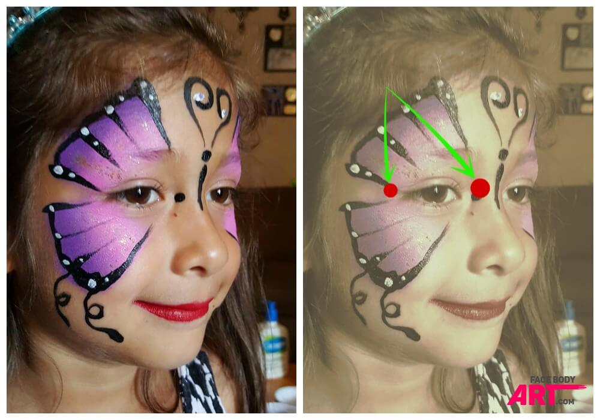
Čtvercové horní křídlo — správný trojúhelníkový tvar vyznačen zeleně
7. Víčka nepokrytá barvou
K tomu dochází, když umělec pracuje s nekvalitními materiály a bojí se pokrýt víčka, nebo má málo zkušeností. Někdy klienti žádají, aby se malovalo dál od očí. Světlé barvy jako bílá, perleťová bílá, zlatá, stříbrná a mnoho dalších pomohou vytvořit jemný přechod k tmavším barvám na vnější části křídel, snadno se smyjí a vše propojí.
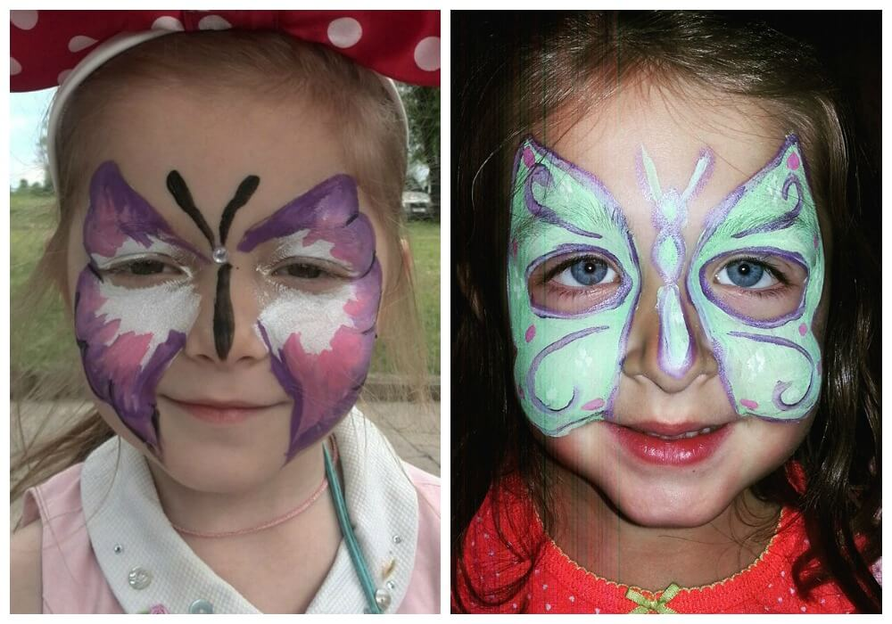
V obou příkladech — nepokrytá víčka kvůli nekvalitním barvám
8. Prodloužení spodních křídel směřující na krk nebo ke koutkům rtů
Začátečník obvykle maluje prodloužení směřující někam na krk nebo ke koutkům rtů, ale žádné z těchto umístění nebude vypadat správně. Pamatujte, že všechna prodloužení na tváři by měla směřovat k bradovému OB.
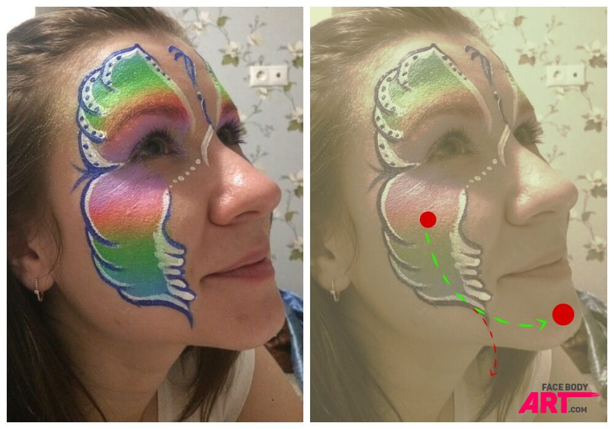
Prodloužení směřuje na krk — správný směr je k bradovému OB po zakřivené trajektorii
9. Špičatá horní křídla
Pamatujte, že horní křídlo by mělo mít trojúhelníkový tvar a být umístěno pod úhlem 45 stupňů. Pokud ho chcete zakřivit, nasměrujte ho k hornímu OB.
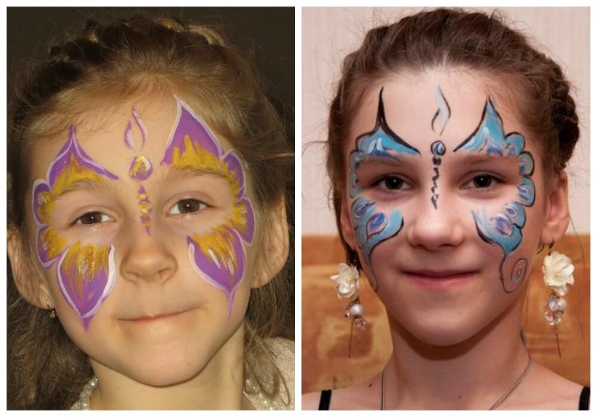
Oba motýli postrádají správný tvar — je nutné prostudovat pravidla stavby
10. Dekorační chyby
- Tečky umístěné podél obrysu: Pokud se rozhodnete nanést sérii teček na obrys, dodržte pár pravidel — udělejte je dokonale kulaté, umístěné ve shlucích různých velikostí a bez dotýkání se okrajů obrysu.
- Nepořádný obrys: Může být důsledkem nestabilní ruky, příliš krátkých tahů nebo špatně nabraného štětce. Pravidelné procvičování linek vám pomůže zlepšit dovednosti.
- Nepořádné blendování barev pozadí: Obvykle se stane, když se umělec snaží vyblendovat barvy pozadí štětcem, ne protože tuto dovednost ovládá, ale protože nemá split-cake. Řešením je zvládnout nanášení gradientů houbičkou.
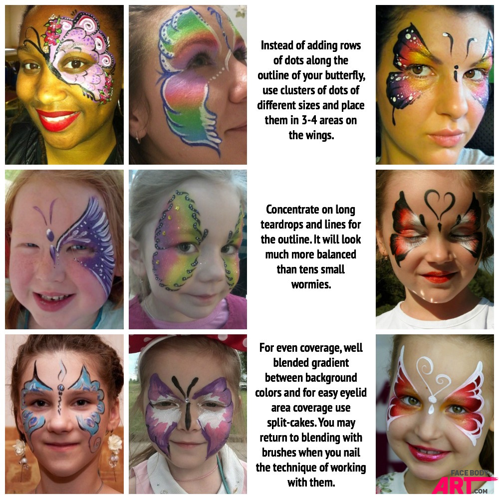
Vlevo chyby, vpravo řešení
Lekce 4: Základní motýl
Rozbor designu:
- Použitý mezilehlý OB
- Horní křídla umístěna pod úhlem 45° a mírně zakřivená směrem k hornímu OB
- Horní křídla jsou trojúhelníková
- Spodní křídla mají tvar lístku a jsou mírně menší než horní
- Horní a spodní křídla se setkávají v OB vnějších koutků očí
- Nejvzdálenější bod spodního křídla je v OB lícní kosti
- Prodloužení ze spodních křídel směřují k bradovému OB
- Vnitřní obrys spodního křídla a nazolabiální rýha svírají úhel
- Asymetrická tykadla odvádějí pozornost od možných chyb v symetrii
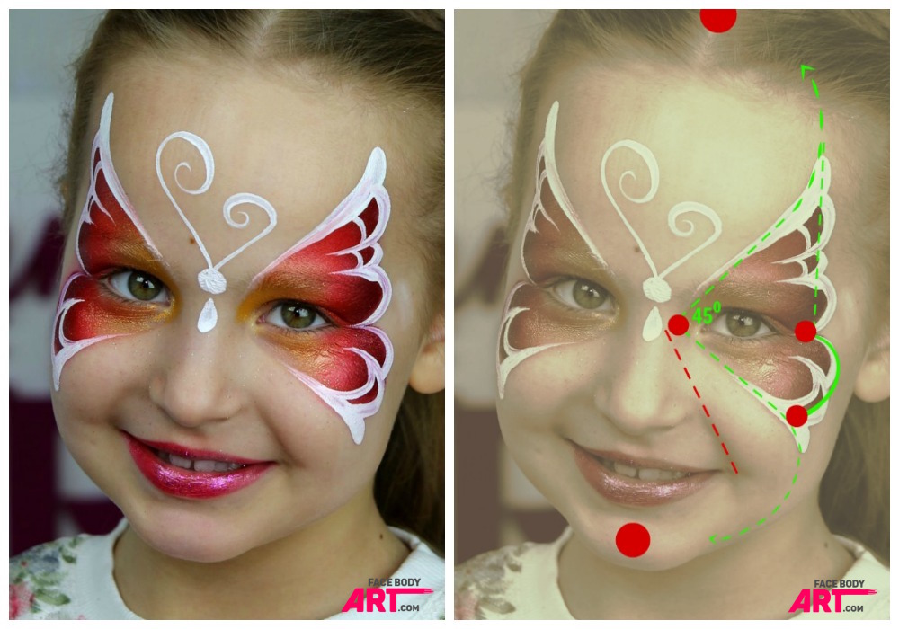
Základní motýl — postup a výsledek
Použité materiály:
- Kulatý štětec Kingart 795 č. 4 — pro linky
- Zelená houba Mehron (oříznutá do tvaru lístku) — pro pozadí
- Split-cake Cameleon Celebrations — barva pozadí
- Cameleon Pure White — barva pro linky
- TAG Pearl Red — rtěnka
- Směs třpytek (holografická růžová, zlatá, stará zlatá) — pro jiskřivé pozadí
- Puffer-bottle na třpytky
- Magenta Sugar Glitter by Shawna Del Real — pro rty
Video: Základní motýl — postup krok za krokem
Lekce 5: One stroke motýl
Rozbor designu:
- Použitý mezilehlý OB
- Horní křídla pod úhlem 45° a mírně zakřivená k hornímu OB
- Horní křídla trojúhelníková
- Spodní křídla ve tvaru lístku, mírně menší než horní
- Horní a spodní křídla se setkávají v OB vnějších koutků očí
- Nejvzdálenější bod spodního křídla v OB lícní kosti
- Prodloužení ze spodních křídel směřují k bradovému OB
- Vnitřní obrys spodního křídla a nazolabiální rýha svírají úhel
- Asymetrická tykadla odvádějí pozornost od možných chyb v symetrii
One stroke motýl — postup a výsledek
Použité materiály:
- Šikmý štětec Cameleon č. 3 — pro one stroke (alternativa: jakýkoli 1-inch plochý nebo šikmý štětec TAG, Mehron, Kingart)
- Kulatý štětec Mark Reid č. 2 — pro malé detaily (alternativa: Kingart 7950 č. 1; štětec Mark Reid je tužší a pružnější, což dává větší kontrolu pro dlouhé slzičky a spirálky)
- Žlutá houba Wolfe — pro nanášení pozadí na víčka
- TAG Pearl White — barva víček
- Split-cake Cameleon Minx — pro one stroke (alternativa: jakýkoli split-cake se světlou barvou na jedné straně a tmavší na protější)
- Cameleon Pure White — pro highlights
- Global Metallic Magenta — pro rty
- Magenta Sugar Glitter by Shawna Del Real — pro rty
Video: One stroke motýl — postup krok za krokem
Modul 3 — Světlo a stín ve face paintingu, tvorba realistických 3D objektů.
Teorie světla a stínu, sféra, kapky vody, vzduchové bubliny
Lekce 1: Světlo a stín ve face paintingu
Světlo a stín na pevném tělese — sféře
Podívejme se, jak se světlo a stín chovají na pevném tělese — sféře. Zdroj světla je umístěn nahoře, což vede k vytvoření malé skvrny světla — odlesku (highlight). Oblast světla se nachází kolem odlesku. Stín tvaru (form shadow) rámuje sféru v půlkruhovém tvaru. Stín, který dopadá na povrch, se nazývá vržený stín (cast shadow). Světlo se částečně odráží od povrchu zpět na sféru a vytváří oblast odraženého světla na jejím spodku.
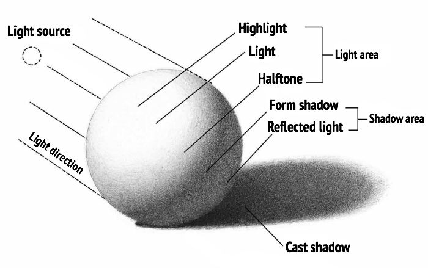
Světlo a stín na sféře — odlesk, oblast světla, stín tvaru, vržený stín, odražené světlo
Chování světla a stínu v závislosti na typu zdroje světla:
- Bodový zdroj světla vytváří ostré kontrasty — oblast světla je zřetelně oddělena od stínu tvaru, spolu s jasně definovaným vrženým stínem.
- Dva bodové zdroje světla vedou k vytvoření dvou překrývajících se stínů, kde temnota stínů se může lišit v závislosti na vzdálenosti zdroje světla.
- Rozptýlený zdroj světla je nejběžnější situace (příklad: denní světlo). Rozptýlené světlo osvětluje objekt z různých úhlů, což vede k vytvoření jemných gradientů. Nejtmavší stín je umístěn v nejbližší blízkosti objektu.
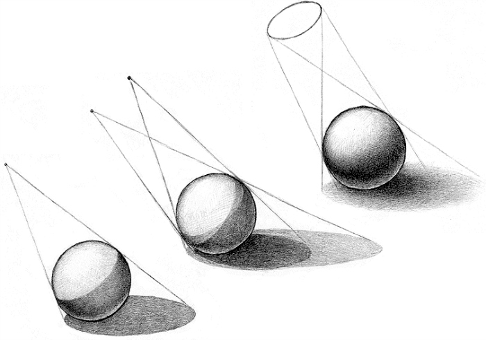
Bodový, dvojitý a rozptýlený zdroj světla — různé chování stínů
Tvar vrženého stínu:
V závislosti na umístění zdroje světla bude mít vržený stín různé tvary. Sféra vždy vrhá eliptický stín různé délky.
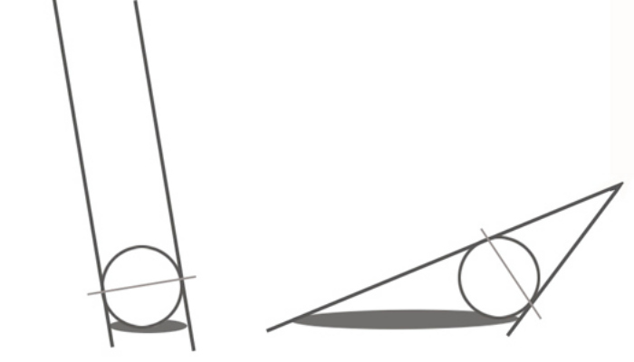
Různé tvary vrženého stínu v závislosti na umístění zdroje světla
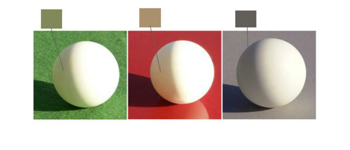
Stíny jsou vždy tmavší odstíny barvy povrchu
Čím blíže je objekt k povrchu, tím tmavší bude jeho vržený stín — a naopak. Toto pravidlo se ve face a body paintingu také často používá.
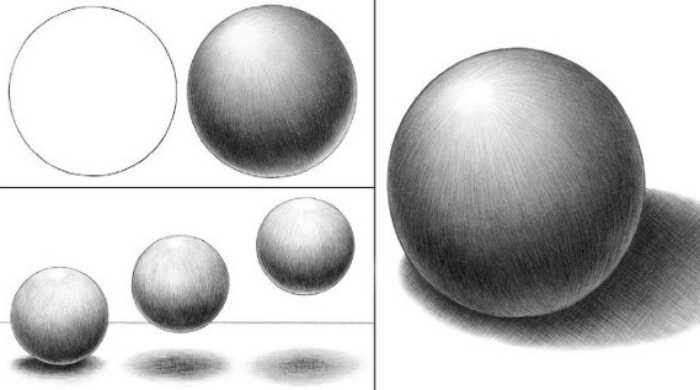
Čím blíže objekt k povrchu, tím tmavší vržený stín
Lekce 2: Tvorba 3D sférických prvků
Světlo a stín na sféře (neprůhledný objekt)
Zdroj světla je umístěn nad sférou, což vede k vytvoření malé skvrny světla — odlesku. Oblast světla je kolem odlesku. Stín tvaru rámuje sféru zdola v půlkruhu. Sféra vrhá eliptický stín na povrch. Světlo se částečně odráží od povrchu a vytváří úzkou zvýrazněnou oblast na spodku sféry — oblast odraženého světla.
Sféra může být jakékoli barvy, ale vržený stín by měl být nutně hnědý odstín.
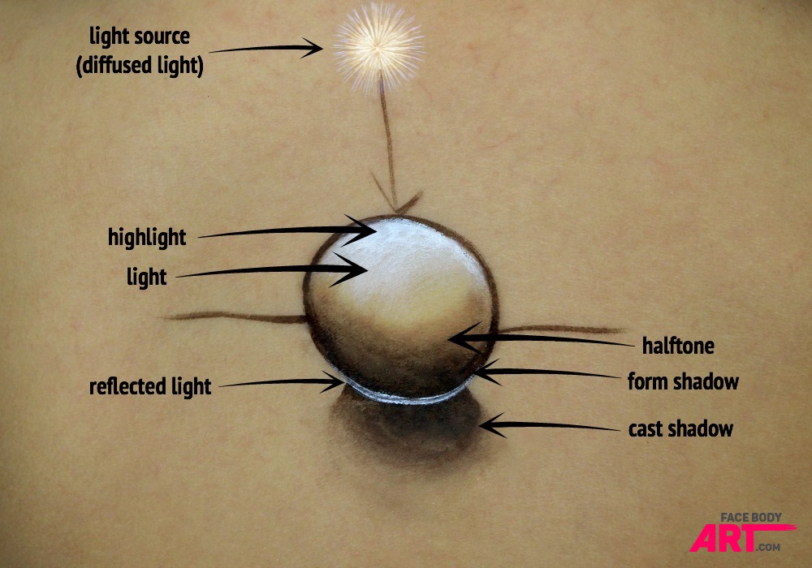
Světlo a stín na sféře — teorie a malování
Světlo a stín na kapce vody
Budeme mluvit o průhledné kapce, protože světlo se chová odlišně v barevné nebo neprůhledné kapalině. Kapky mohou mít různé tvary — statické nebo stékající.
U statické sférické i stékající kapky světlo proniká skrz kapku a částečně vychází z její protější strany. Proto budeme mít v tomto případě dva odlesky — v místě, kde světlo vstupuje do kapky, a na protější straně, kde z ní vychází. Vstupující světlo se láme a rozptyluje a vytváří oblast světla na spodku kapky. Stín je umístěn na protější straně oblasti světla, kolem odlesku.
Další důležitá poznámka: světlo vytváří světelnou cestu na povrchu poté, co vyjde z kapky.
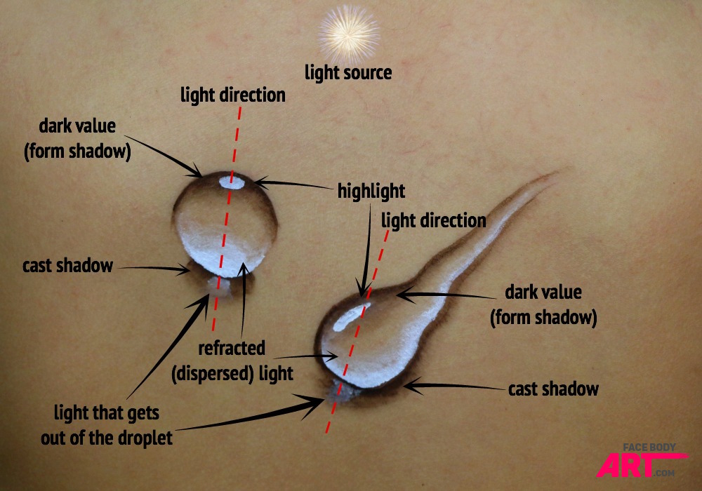
Světlo a stín na statické a stékající kapce vody
Světlo a stín na vzduchové bublině
Stejně jako kapka vody je i vzduchová bublina průhledný prvek. Proto se světlo bude chovat podobně — pronikne skrz bublinu a vytvoří dva odlesky (kde světlo vstupuje a kde vychází). Při průchodu bublinou se světlo rozptyluje a vytváří oblast světla na protější straně.
Překrývání bublin při malování pomůže zvýraznit efekt průhlednosti.
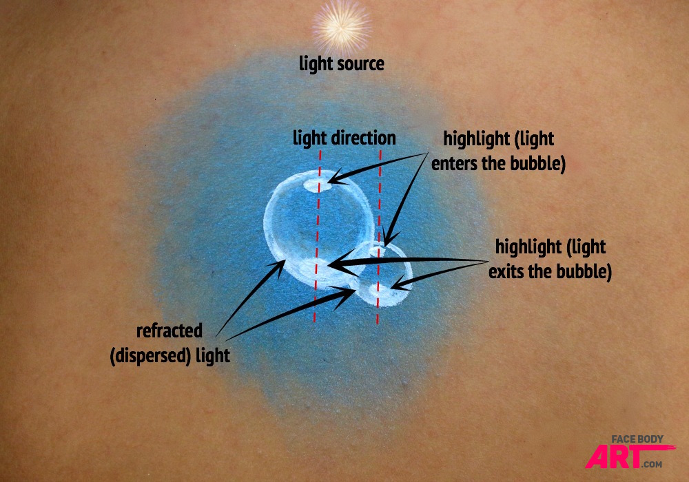
Světlo a stín na vzduchových bublinách
Jak malovat světlo a stín na těchto prvcích
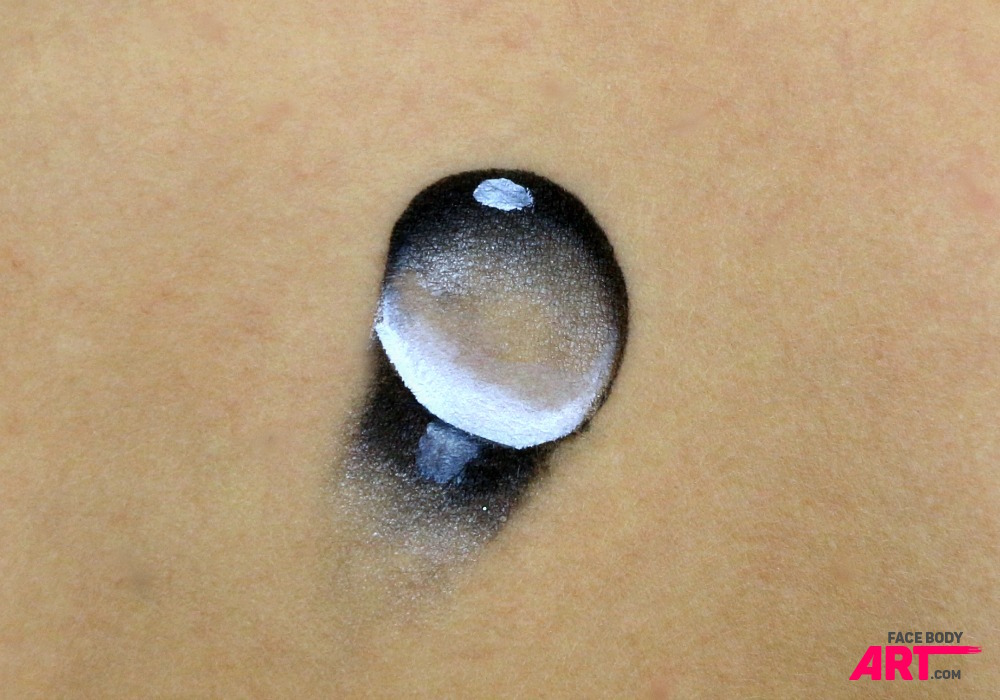
Malování kapky vody — postup
Video: Tvorba 3D sférických prvků — kapky, bubliny, sféry